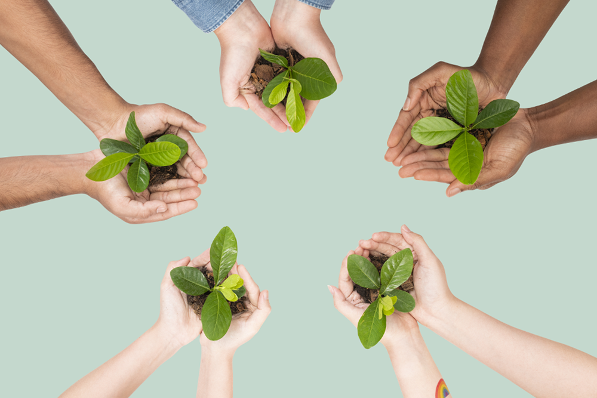

Office of the Pro Vice-Chancellor for Climate, Sustainability and Inequality at Wits University
The integration of three concepts – Climate, Sustainability and Inequality
The Office of the Pro Vice-Chancellor for Climate, Sustainability and Inequality harnesses the University’s diverse and extensive intellectual capacities, partnerships, social and cultural capital, and other resources, in order to bring them to bear to achieve South Africa’s emissions targets and have an impact in these areas for good. The integration of three concepts – Climate, Sustainability and Inequality - is indicative of our holistic approach. This portfolio will aim to support existing climate research and teaching; increase collaboration across schools and faculties; strengthen partnerships with other universities; and better integrate activities to support policy change in both the public and private sectors.
We will focus on climate in order to support South Africa’s commitment to achieving net zero carbon emissions by 2050 (SA LEDS, 2020). Sustainability, our second area of focus, is important because it encompasses broader environmental and social issues. These broader issues of sustainability (such as water pollution and biodiversity loss) affect the health of humans, animals and ecosystems, and will exacerbate the effects of climate change on water and food security. Inequality is the third focus due to the extreme inequality in the responsibility for emissions based on consumption in South Africa, with the top 10% of income earners contributing far more to emissions than the bottom 50%, as shown in a recent Oxfam report (Gore, 2015). High income earners contribute more to emissions and are also less likely to suffer the consequences. With South Africa’s status as the most unequal country in the world, we cannot risk increased inequality due to climate change (OECD, 2022).
About the Pro Vice-Chancellor
Professor Imraan Valodia is Professor of Economics, Pro Vice-Chancellor: Climate, Sustainability and Inequality, and Director of the Southern Centre for Inequality Studies, University of the Witwatersrand, Johannesburg (Wits). He was appointed as the Pro Vice-Chancellor for Climate, Sustainability and Inequality from March 2022. A Pro Vice-Chancellor is a senior position created to oversee important strategic focus areas for the University. Prior to this, he served as the Dean of the Faculty of Commerce, Law and Management.

Climate Change and Me marks Wits’ largest first-year course in its history
Climate Change and Me is a compulsory, short online course for first years across all Wits faculties which encourages them to think about how their field could be applied to address the climate crisis. It was launched in 2022 and became the largest course by student numbers ever offered at Wits University
How we can sustain all life forms
Repairing Earth as a whole, together, is a precondition for human durability.
As part of Wits University’s focus on the intersection of climate change, sustainability and inequality, the first presentation in a seminar series was launched, with the internationally-acclaimed scholar Professor Achille Mbembe delivering his address: Notes on planetary habitability.
South Africa has committed to achieving net zero carbon emissions by 2050, which requires peaking emissions in 2025, followed by a plateau and decline. South Africa's updated Nationally Determined Contribution mitigation targets required by the Paris Agreement set a target to lower greenhouse gas emissions from the current level of around 500 Mt of carbon dioxide equivalent per year to between 350-420 Mt carbon dioxide equivalent per year by 2030 (RSA, 2021). Achieving this target will require significant investments in research, innovation, skills, hard and soft infrastructure and more, for a new, lower-carbon economy.
Sunny-side up as Wits goes green
Wits is taking a holistic approach to greening its operations in line with the 2030 SDGs, the agenda of which has 17 overlapping goals relevant to the University. Operationally, this includes infrastructure management (grounds and buildings), energy, waste, water and transport.
Study solutions to climate change at Wits
Global climate change is a growing issue for of the 21st century. Wits offers several programmes that prepare young people to contribute to solutions that address the climate crisis and lead the way to a sustainable society.”
Curios.ty Issue 13
Climate Emergency
Our researchers investigate the impact and implications of global change and climate change on people, places, and politics. We unpack green jobs and climate engineering, give some ‘green’ alternatives to dirty words, and explore how heat affects our youth.
Sanedi launches two solar heating system projects
The South African National Energy Development Institute (Sanedi) launched the first solar district heating system in South Africa at the University of the Witwatersrand’s (Wits’) Junction Campus, as well as the largest solar process heat system in sub-Saharan Africa at the Klein Karoo International (KKI) tannery.

WITS Junction Hot Water System
The Hot Water System Project | Innovative Hybrid System Combined Heat and Power (CHP) | Solar | Gas - The project aimed to generate hot water efficiently, optimise utility tariffs, simplify maintenance, and benefit from centralised system diversity (lower overall capacity). This is the largest combined solar thermal hot water system in the southern hemisphere. Also the largest solar thermal hot water district heating system in South Africa.